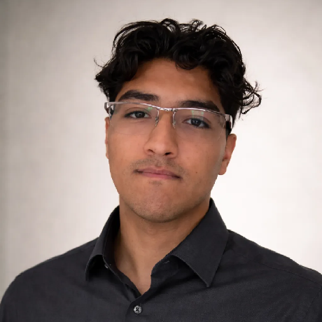
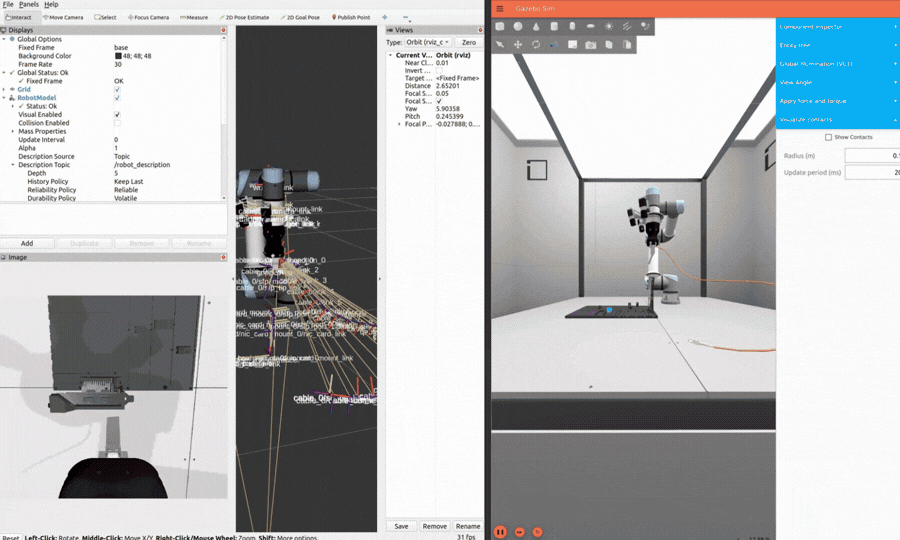
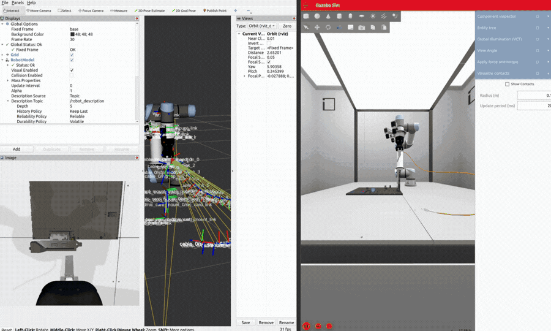
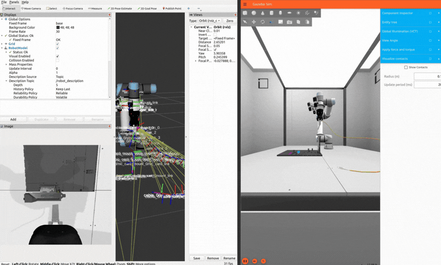

RL Agent · 2-DOF Arm
training · ep 0
DEMO // GREEDY POLICY ROLLOUT
loading policy…
Episode
0
Reward
—
Distance
—
Success
0%
Σ Reward / episode
Entropy H(π)
Grad norm ‖∇J‖
Policy π(Δθ₁)
Hyperparameters

Robotics Engineer · ROS 2 · RL
Gruzver Phocco
MSc Computer Science — Robotics & Reinforcement Learning
B.Eng Mechatronics Engineering
Pontifical Catholic University of Peru (PUCP)
Robotics engineer and MSc candidate in Computer Science at PUCP, focused on autonomous navigation, robot perception, and multi-robot systems built for real-world deployment. I’m currently developing a heterogeneous search-and-rescue robot team — quadruped, rover, and thermal UAV — for post-disaster victim detection under a PROCIENCIA national research grant. My core work spans ROS 2 navigation stacks, thermal person detection, sim-to-real transfer, and reinforcement learning for autonomous systems.
Research Experience

PUCP · Interdisciplinary Research Lab · Jan 2026 — Present
Search & Rescue Robotics
Research Assistant
- Built an end-to-end ROS 2 pipeline for real-time person detection from thermal drone video — YOLOv8x fine-tuned on ~5,000 custom thermal frames, multi-object tracking with persistent IDs, and Kalman-filter GPS smoothing.
- Developed pixel-to-GPS geolocation from full drone telemetry (altitude, yaw/pitch/roll, FOV), feeding a live Leaflet.js operator dashboard for SAR teams.
- Planned and executed aerial data-collection campaigns with a DJI thermal drone; currently training a multispectral detection model for post-disaster scenarios.

PUCP · Interdisciplinary Research Lab · Sep 2024 — Mar 2026
Social Robotics — AMII
Research Assistant
- Designed and deployed the full locomotion system for AMII, a differential-drive social robot: mechanical design, electrical integration, and a ROS 2 Nav2 stack (AMCL, SLAM Toolbox, EKF, RealSense D435 obstacle avoidance).
- Built an agentic NLP interaction stack for autonomous, LLM-based dialogue with people in real public environments.
- Integrated navigation, hardware drivers, and natural-language control into a unified deployable system; coordinated live demos at public events.
Key Projects

URC / ERC Competitions · Oct 2025 — Present
Chaska Rover
Manipulation & Locomotion Lead
- Led design and deployment of a 6-DOF robotic arm: mechanical design, Gazebo simulation, MoveIt 2 motion planning, and on-hardware AI object detection.
- Developed multi-mode locomotion (swerve, differential, Ackermann) with velocity-based inverse kinematics and real-time ROS 2 control.
- Implemented PS5 DualSense teleoperation for responsive field operation.
DROP PHOTO / VIDEO
Robotic Manipulation · 2024
Kit Manipulador
4-DOF Arm — Sim & Hardware
- Built a 4-DOF robotic arm with a full ROS 2 + MoveIt 2 motion-planning pipeline.
- Simulated in Gazebo and integrated on real hardware via micro-ROS on a Raspberry Pi Pico W.
DROP PHOTO / VIDEO
PUCP Intelligent Robotics Group · Mar 2024 — Present
RL Navigation & Autonomous Chess
Reinforcement Learning & Vision
- Trained autonomous navigation policies with reinforcement learning on AWS DeepRacer.
- Developed a ROS 2-controlled arm for autonomous chess playing with computer-vision-based piece detection.
Achievements

Finalist · RoboCup 2026 World Championship · Incheon, South Korea
RoboCup ARM Challenge
Autonomous Manipulation
- Selected as a finalist to compete in the RoboCup 2026 World Championship.
- Developing an autonomous robot-arm pipeline with RGB-D point-cloud perception, object classification, and pick-and-place manipulation.
- Built on a UR5e manipulator using MATLAB / Simulink.

Top Qualifier · ~224/300 qualification score · 2026
AI for Industry Challenge — Intrinsic
Vision-Based Insertion Policy
- Developed a vision-based fiber-optic connector insertion policy for a UR5e robot, scoring ~224/300 in the qualification phase.
- Built a YOLOv8-Pose keypoint detection and solvePnP 6-DOF pose-estimation pipeline with multi-camera fusion.
- Executed impedance-controlled spiral insertion with force/torque snap detection.
Contact